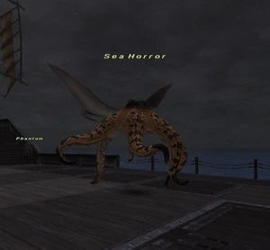

Level 75 reference · Zenith rules
|
Job: Monk Notorious Monster |
 |

|
Zone |
Level |
Drops |
Steal |
Spawns |
Notes |
|
60 - 62 |
1 |
A, H | |||
|
60 - 62 |
1 |
A, H | |||
|
HP = Detects Low HP; M = Detects Magic; Sc = Follows by Scent; T(S) = True-sight; T(H) = True-hearing JA = Detects job abilities; WS = Detects weaponskills; Z(D) = Asleep in Daytime; Z(N) = Asleep at Nighttime | |||||
Notes:
- Special Attacks: Hundred Fists (may use this at 40-75%, if at all), Maelstrom, Cross Attack, Hard Membrane (Evasion boost), Regeneration, and Tentacle.
- Hundred Fists can be countered by using Flash, Third Eye and Seigan, Invincible, or Sentinel.
- Susceptible to Gravity and Bind.
- Sea Horror is a true lottery pop (most likely from the Sea Monk), sometimes spawning multiple times in one ride.
- Sea Horror will not spawn on rides where Pirates show up. However, it is theorized that it may spawn right before or after a pirate attack.
- Killable by many jobs at 75. (see testimonials)
Adapted from Eden Wiki: Sea Horror · Contributors and history · CC BY-SA 4.0. Revision 44594. Layout, links and optional background text adapted for Zenith.